Chapitre 1
Qu'est-ce que la génération procédurale ?
Au lieu de stocker un monde, on stocke la recette qui le fabrique.
Définition
« La génération procédurale de contenu (Procedural Content Generation, PCG) est une famille de méthodes où, au lieu de stocker des objets 3D, on stocke les paramètres d'un algorithme de construction. Ces méthodes ont été très utilisées dans les années 1970-1980, à l'époque où les ordinateurs avaient peu de mémoire. Pour créer des univers très étendus, on s'appuyait généralement sur ces méthodes qui utilisent beaucoup la notion d'aléatoire. »
— d'après la thèse de Jean-David Génevaux (LIRIS).
Amplifier les données
L'intérêt principal est l'amplification : peu de données en entrée produisent un résultat riche et varié. Une fonction de bruit de Perlin et quelques opérations mathématiques suffisent à produire du feu, des nuages, du bois, du marbre ou un relief. Et si le contenu peut être généré à la volée :
- le level designer n'a pas à le concevoir à la main ;
- il n'y a rien à stocker ni à transmettre, seulement une graine (seed) et des paramètres ;
- la même graine redonne exactement le même monde, ce qui est indispensable pour le multijoueur ou la sauvegarde.
En contrepartie, le contrôle artistique est plus indirect : on règle des paramètres et des contraintes, pas chaque détail. En production, la génération procédurale sert donc surtout d'outil d'assistance aux artistes, comme le montre l'étude de cas du chapitre 2.
Plan du cours
- Une étude de cas industrielle : Ghost Recon Wildlands (Ubisoft).
- Les L-systems, pour générer des courbes fractales et des arbres.
- La génération de villes.
- La génération de terrains par bruit de Perlin.
- Le projet de fin de cours et des ressources.
Deux conférences de la GDC pour entrer dans le sujet : Practical Procedural Generation for Everyone de Kate Compton, et une introduction en vidéo à la génération procédurale.
Chapitre 2
Étude de cas : Ghost Recon Wildlands
Le plus grand monde ouvert d'action-aventure jamais produit par Ubisoft, et comment l'équipe a généré procéduralement une grande partie de son contenu.
Le jeu se déroule en Bolivie, avec 11 biomes très différents. À cette échelle, peindre ou placer tout le contenu à la main n'est pas envisageable : l'équipe a développé une chaîne d'outils procéduraux, exécutés hors ligne dans l'éditeur, que les artistes pilotent et retouchent.
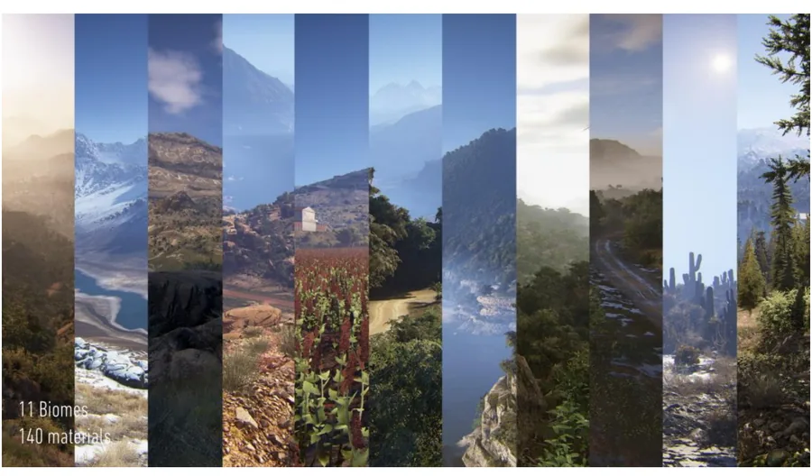
Les chiffres
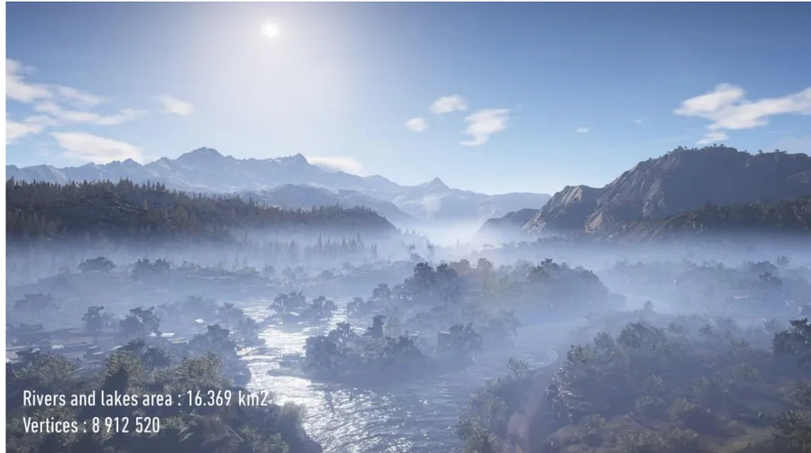
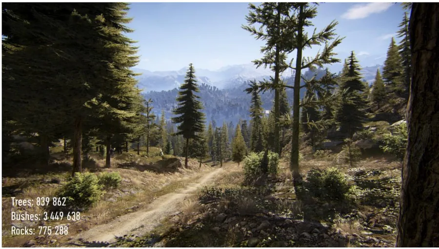
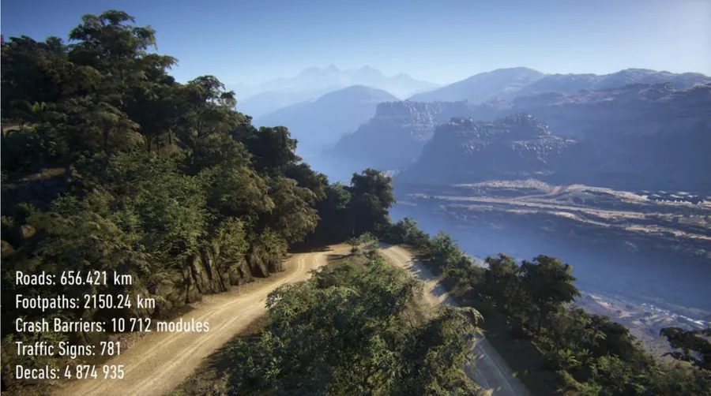
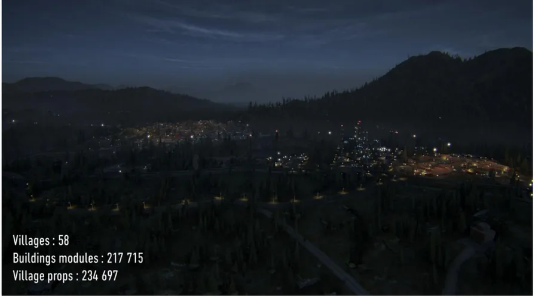
S'y ajoute un réseau ferré complet qui traverse le monde.
Distribuer les matériaux du terrain
Le terrain part de données réelles, retouchées avec des outils de sculpture (copier-coller, effacement…). Vu la taille de la carte, peindre les matériaux (roche, herbe, neige…) à la main aurait été une très mauvaise idée : il fallait un processus semi-automatique.
Première règle : l'éditeur teintait déjà la carte de hauteurs selon la direction de la normale, pour mieux faire sentir le relief. Vue de loin, cette seule règle, lerp(gris, blanc, normale.z), suffit presque à produire un sommet enneigé convaincant : la neige tient sur les zones plates, la roche reste à nu sur les pentes.
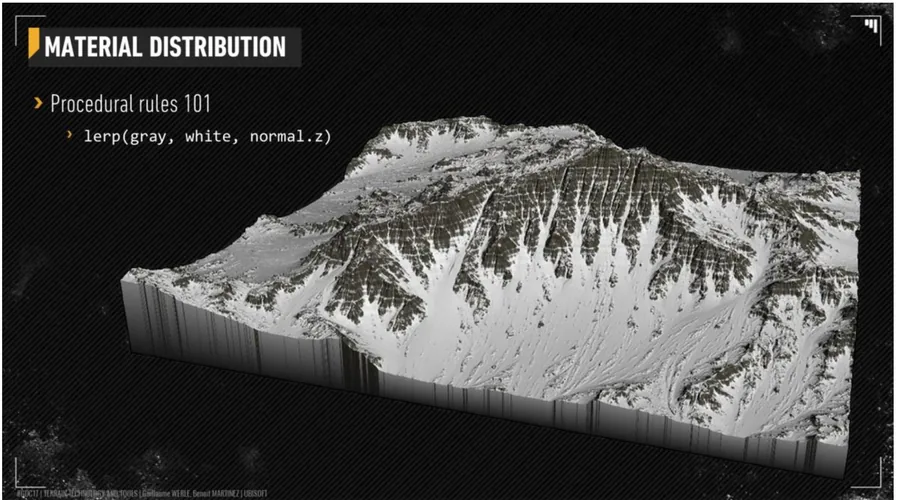
On ajoute ensuite des conditions sur la pente, l'altitude, du bruit et la courbure, ou des noyaux simples : des règles assez légères pour être évaluées en temps réel dans un pixel shader.
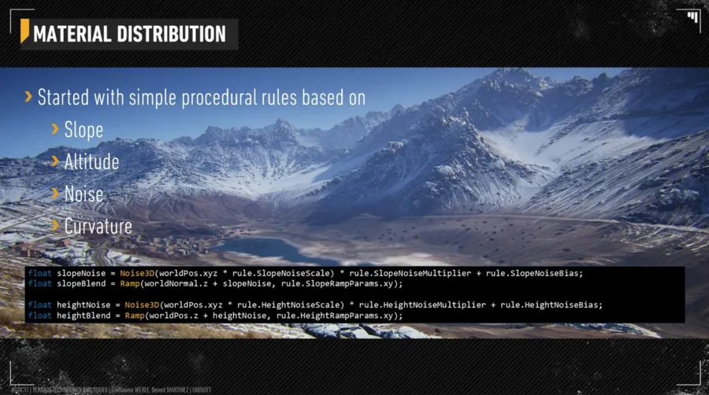
Le réseau routier
Première idée : creuser les routes directement dans le terrain plutôt que de les représenter par de la géométrie. Mais les transitions de matériaux sont pauvres et les détails manquent. Les routes sont donc de vrais objets, dont le tracé est calculé par un plus court chemin sur le terrain, avec un coût qui pénalise les fortes pentes.
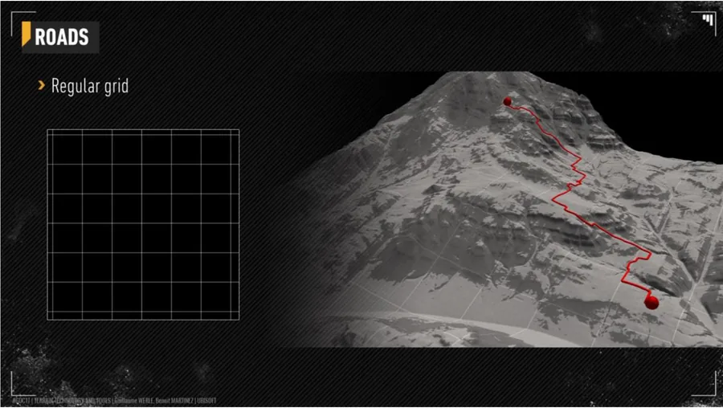
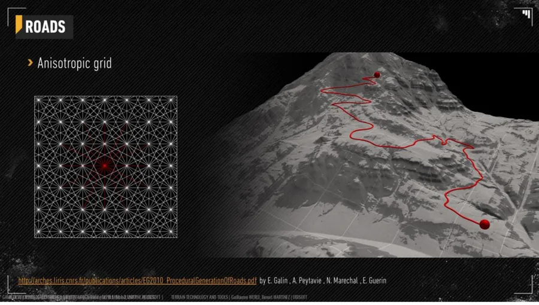
On obtient un réseau cohérent, avec plusieurs types de routes et de petits chemins. Tout est calculé hors ligne, donc le temps de calcul n'est pas critique : une dizaine de minutes pour une tuile de 2 km × 2 km. La méthode s'inspire des travaux de Galin, Peytavie, Maréchal et Guérin (LIRIS) sur la génération procédurale de routes.
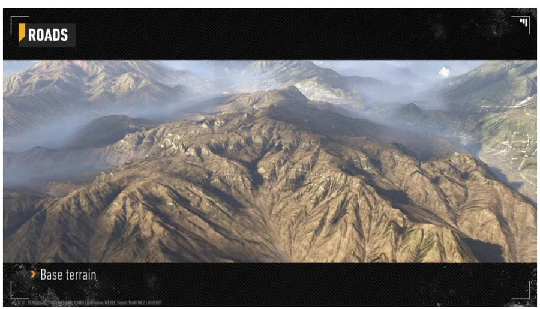
Ponts et tunnels. Certains outils, comme celui des ponts, s'utilisent seuls pour créer un pont à la main, ou intégrés dans un outil plus large qui les place automatiquement. Ponts et tunnels sont assemblés à partir de modules : aucune géométrie nouvelle n'est créée, tout n'est qu'instanciation.
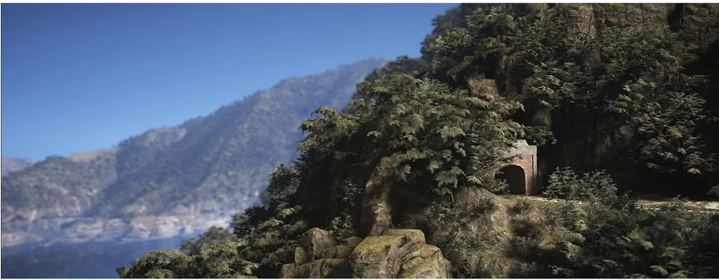
Images et chiffres tirés de la présentation d'Ubisoft à la GDC 2017, Ghost Recon Wildlands: Terrain Tools and Technology.
Chapitre 3
L-systems : fractales et arbres
Une grammaire de réécriture, une tortue qui dessine : de quoi produire flocons, dragons et forêts.
Principe
Les L-systems ont été introduits en 1968 par le biologiste Aristid Lindenmayer pour modéliser le développement des plantes. Ils excellent pour les objets organiques et les fractales. Un L-system est formé :
- d'un axiome, la chaîne de départ ;
- de règles de production (de réécriture), de la forme
symbole → chaîne.
À chaque itération, tous les symboles qui ont une règle sont remplacés en parallèle ; c'est ce qui distingue un L-system d'une grammaire classique. Par exemple, avec les règles A → B et B → ACA (C est une constante, sans règle) et l'axiome AA :
AA → BB → ACAACA → BCBBCB → ACACACAACACACA → …L'interprétation par une tortue
Pour dessiner, on lit la chaîne de gauche à droite comme des ordres donnés à une « tortue » qui a une position et un cap :
F- avancer d'un pas en traçant un trait ;
f- avancer d'un pas sans tracer ;
+/−- tourner à gauche / à droite d'un angle δ ;
[/]- empiler / dépiler l'état de la tortue (position et cap) : c'est ce qui permet de faire des branches.
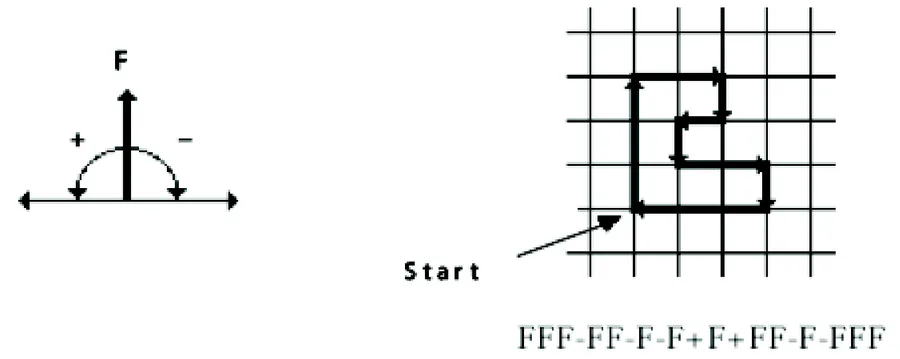
FFF−FF−F−F+F+FF−F−FFF avec δ = 90°.Exemples
Île de Koch quadratique
Axiome F−F−F−F, δ = 90°, règle F → F−F+F+FF−F−F+F. Chaque segment est remplacé par une ligne brisée de 8 segments ; le carré initial devient une île au contour de plus en plus découpé.
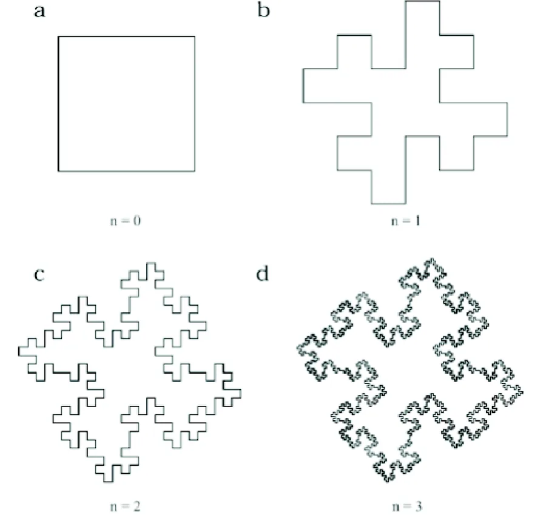
Flocon de Koch
Axiome F−−F−−F (un triangle), δ = 60°, règle F → F+F−−F+F. Chaque segment reçoit une « pointe » triangulaire en son milieu. −− correspond donc à un virage de 120°.
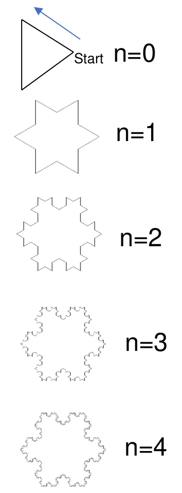
Courbe du dragon
Axiome Fl, δ = 90°, règles Fl → Fl+Fr+ et Fr → −Fl−Fr ; \(F_l\) et \(F_r\) font tous deux avancer la tortue. Après 10 itérations, la courbe pave une forme de dragon sans jamais se croiser.
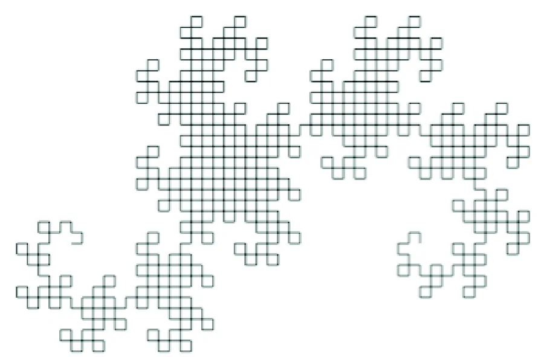
Extensions
Les L-systems de base ont inspiré de nombreuses variantes :
- à crochets (bracketed) : sauvegarder et restaurer l'état avec
[ ], pour les branches ; - stochastiques : plusieurs règles possibles pour un même symbole, choisies au hasard, pour que deux arbres ne soient pas identiques ;
- contextuels : une règle ne s'applique que selon les symboles voisins, pour propager un signal (une floraison, par exemple) ;
- paramétriques : les symboles portent des valeurs (longueur, épaisseur, angle) transmises entre productions.
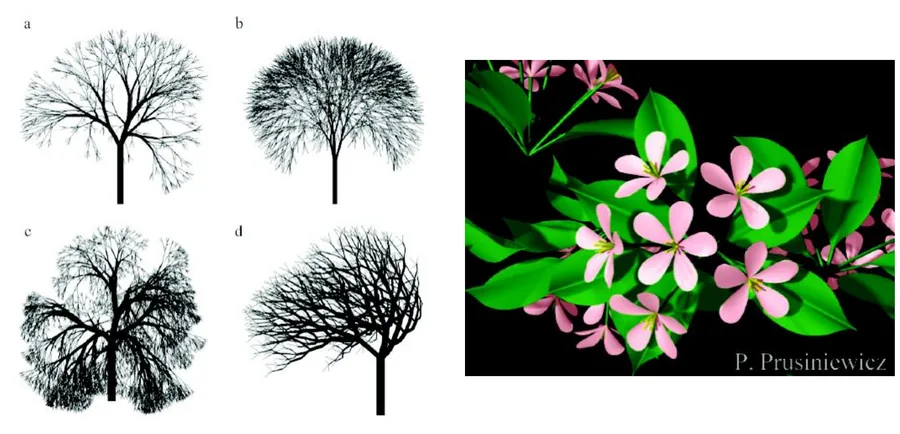
Pour aller plus loin
- Algorithmic Botany : les publications de Prusinkiewicz et de son équipe, dont le livre The Algorithmic Beauty of Plants (1990), qui couvre en détail les variantes de L-systems et de nombreux types de plantes.
- Arbaro : un générateur d'arbres pour POV-Ray.
- Coding Challenge : Fractal Trees – L-System (The Coding Train), et la construction d'arbres de Sören Pirk.
Chapitre 4
Génération de villes
Des L-systems guidés par des contraintes pour tracer les rues, puis d'autres grammaires pour les bâtiments.
L'article de référence est Procedural Modeling of Cities (Parish et Müller, SIGGRAPH 2001), à l'origine du logiciel CityEngine.
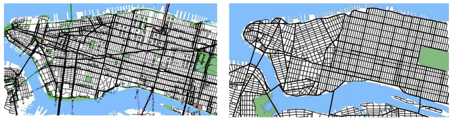
- On part d'une seule rue.
- Un L-system paramétrique la fait bifurquer et s'étendre.
- Les paramètres de la chaîne sont ajustés par des objectifs et des contraintes. Les objectifs règlent la direction et l'espacement des rues (suivre la densité de population, adopter un plan en damier ou radial). Les contraintes tiennent compte de l'environnement : contourner l'eau et les parcs, créer des ponts, reconnecter une rue à un carrefour proche pour former des boucles.
- Les rues délimitent des îlots, découpés en parcelles.
- Sur chaque parcelle, un autre L-system génère le bâtiment, dont la forme est construite par opérations CSG (voir le cours de modélisation géométrique, chapitre 4) sur des formes simples.
- Procedural Generation for Dummies (Martin Evans) : une série d'articles sur les routes (en grille ou aléatoires), les bâtiments, la végétation par L-system et le terrain.
- Une ville infinie générée par Wave Function Collapse (Marian Kleineberg) : une alternative aux grammaires, par contraintes d'adjacence entre tuiles.
- En vidéo, avec Unity : génération procédurale de ville, ville et système de grille, Generating a Procedural City with Unity 5.
Chapitre 5
Terrains et bruit de Perlin
Un bon bruit, sommé à plusieurs échelles, suffit à produire un relief crédible.
Fonctions de bruit
Un pur aléatoire (une valeur indépendante par pixel) donne de la « neige » télévisuelle, inutilisable. Une fonction de bruit comme celle de Ken Perlin (1985) est un aléatoire cohérent :
- elle repose sur un générateur pseudo-aléatoire avec une graine : même graine, même résultat ;
- elle est définie sur \(\mathbb{R}^n\) (1D, 2D, 3D…), et varie continûment : deux points proches ont des valeurs proches ;
- elle approche un bruit gaussien filtré, avec des détails d'une taille caractéristique ;
- elle est implémentée comme une spline pseudo-aléatoire : des gradients aléatoires aux nœuds d'une grille, interpolés de façon lisse.
Tout l'enjeu est qu'elle soit rapide à évaluer. Unity la fournit directement : Mathf.PerlinNoise(x, y).
Sommer des octaves
Un seul bruit donne des collines molles. Pour un relief naturel, on additionne plusieurs octaves : des bruits de plus en plus fins et de moins en moins forts (on parle de fractal Brownian motion) :
- Largeur / hauteur
- la taille de la carte (ou texture) générée.
- Échelle
- le zoom sur le bruit : plus elle est grande, plus les reliefs sont larges.
- Octaves
- le nombre d'appels à la fonction de bruit, c'est-à-dire de couches de détail.
- Persistance (< 1)
- le facteur qui réduit l'amplitude d'une octave à la suivante.
- Lacunarité (> 1)
- le facteur qui augmente la fréquence d'une octave à la suivante.
Avec 4 à 6 octaves, une persistance de 0,5 et une lacunarité de 2, on obtient déjà un relief convaincant. La série vidéo Procedural Landmass Generation (Sebastian Lague) en déroule l'implémentation complète dans Unity ; voir aussi cette vidéo sur le bruit.
Ajouter de l'eau
Le plus simple : un seuil d'altitude. Tout ce qui est sous \(z_{\text{eau}}\) devient de l'eau, et l'on peut aplanir le relief à ce niveau. On peut ensuite colorer le terrain par altitude (sable, herbe, roche, neige) et par pente, comme dans Ghost Recon Wildlands (chapitre 2).
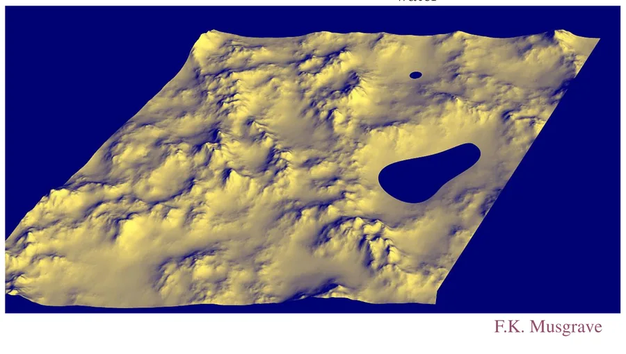
Un terrain issu d'une carte de hauteurs ne peut représenter ni arche, ni grotte, ni surplomb (voir les modèles volumiques du cours de modélisation géométrique, chapitre 4). Et le bruit ne connaît pas l'érosion : les vallées ne « coulent » pas. Les méthodes récentes ajoutent des simulations d'érosion hydraulique ou partent de réseaux de rivières.
Partir du monde réel
Plutôt que de tout inventer, on peut générer à partir de données observées : modèles numériques de terrain, cadastre, photographies aériennes. C'est l'approche interprétative développée au LIRIS, par exemple avec la Métropole de Lyon.
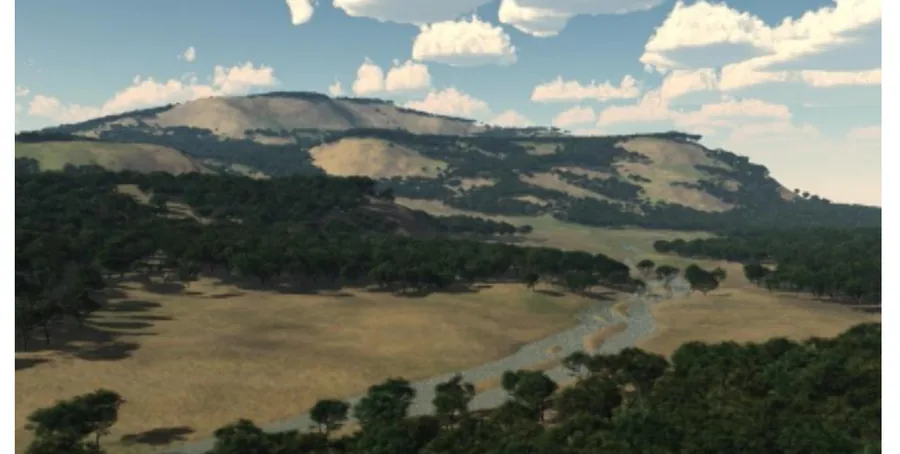
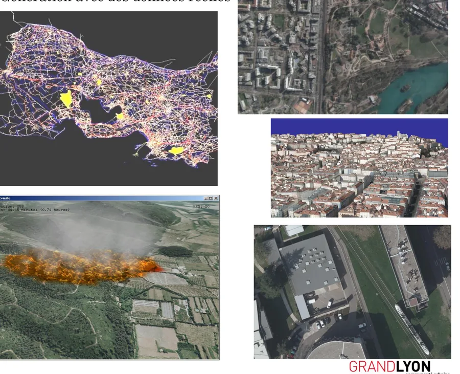
Chapitre 6
Projet de fin de cours
Construire ensemble une carte complète, façon monde ouvert, réutilisable dans un futur jeu.
Les étudiants sont répartis en quatre groupes, chacun responsable d'un aspect de la génération procédurale, et le tout doit s'assembler en une seule carte, dans l'esprit d'un monde ouvert à la GTA. Chaque groupe a un git master et travaille sur le même dépôt.
| Groupe | Méthode | Objectif |
|---|---|---|
| Terrain | Bruit de Perlin (chapitre 5) | Le terrain le plus réaliste possible, en réservant une zone plane pour la ville. |
| Routes | Plus court chemin, A* ou Dijkstra (chapitre 2) | Des grands axes, qui évitent les zones de forte courbure du terrain, et des chemins de montagne. |
| Arbres | L-systems (chapitre 3) | Trois espèces d'arbres différentes, placées aléatoirement sur le terrain pour former des forêts. |
| Ville | L-systems (chapitre 4) | Générer les rues, puis les parcelles, puis les bâtiments. |
- Les interfaces entre groupes : le terrain doit exposer sa hauteur et sa pente aux routes et aux arbres ; les routes et la ville doivent réserver leur emprise pour que la forêt ne pousse pas dessus.
- La reproductibilité : tout le monde utilise une graine commune, pour que la même carte soit régénérée à l'identique.
- Les performances : instancier les arbres et les modules de bâtiments plutôt que dupliquer la géométrie, et prévoir des niveaux de détail (cours de modélisation géométrique, chapitre 5).
Les pages des chapitres précédents donnent pour chaque groupe un point de départ (articles, vidéos, tutoriels).